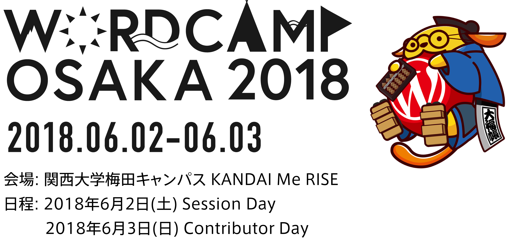

2018/04/29
【2018年度】CSSフレンズ #1 「初心者のためのCSS再入門」
CSS フレンズ@
サイボウズ 大阪梅田オフィス

ご協力ありがとうございました！
CSSフレンズでは目的不明な参加枠作る趣味があるので、
今後の参考にさせていただきます！
120〜130 くらい？
はっきりとした数がわかりませんでした。。
心やさしいフレンズが Twitter とかで教えてくれるかな！？
ハッシュタグは #cssfriends やで。
期待しましょう。
以下コードをコピペしたらこのスタイル使えますよ
.headline {
padding: 0.4em 0.5em;
text-align: left;
color: #494949;
background: #f4f4f4;
border-left: solid 5px #7db4e6;
border-bottom: solid 3px #d7d7d7;
}
誰かのブログとかからコピペする？
間違える可能性もある。
独自の省略文字で CSS を書くことが可能になります。
けっこう昔からありますが
ブログの記事とか最近みない気がする。
元々は Zen-Coding という名前でしたが、2012年9月ごろから「Emmet」という名前で開発が進められ、正式リリースされた現在も機能の拡張が行われているツールです。
HTML/CSSを爆速コーディング Emmet入門 第1回 Emmetを薦める理由 | Adobe Creative Station より
background は `bg` と打つだけ
.bg {
bg
}
タブキーもしくは control + e
.bg {
background: #000;
}
background-color は `bgc` と打つだけ
bgc
タブキーもしくは control + e
background-color: #000;
ショートハンドも一気にでます
bg+
タブキーもしくは control + e
background: #fff url() 0 0 no-repeat;
font-size
fz1
fz1p
fz1e
fz1r
タブキーもしくは control + e
font-size: 1px;
font-size: 1%;
font-size: 1em;
font-size: 1rem;
margin 上下 10px 左右 20px
m10-20
タブキーもしくは control + e
margin: 10px 20px;
text-align
ta-c
ta-l
ta-r
タブキーもしくは control + e
text-align: center;
text-align: left;
text-align: right;
display flex でよく使うやつ
d-f
jc-sb
ai-c
タブキーもしくは control + e
display: flex;
justify-content: space-between;
align-items: center;
| 頭文字 | 出力されるプロパティ |
|---|---|
| m | margin |
| p | padding |
| po | position |
| w | width |
| h | height |
「Emmet CSS チートシート」とかでググるとイイと思います。
使用されてるエディターにプラグインをいれると使えます。
Adobe Dreamweaver CC や Adobe Brackets、Visual Studio Code などのエディターには Emmet がプリインストールされてました。
その他エディターのプラグインのダウンロードは こちらから